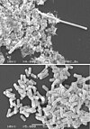

filamentation

Definition: Filamentation is the anomalous growth of certain bacteria, such as Escherichia coli, in which cells continue to elongate but do not divide (no septa formation). The cells that result from elongation without division have multiple chromosomal copies.In the absence of antibiotics or other stressors, filamentation occurs at a low frequency in bacterial populations (4–8% short filaments and 0–5% long filaments in 1- to 8-hour cultures). The increased cell length can protect bacteria from protozoan predation and neutrophil phagocytosis by making ingestion of cells more difficult. Filamentation is also thought to protect bacteria from antibiotics, and is associated with other aspects of bacterial virulence such as biofilm formation.The number and length of filaments within a bacterial population increases when the bacteria are exposed to different physical, chemical and biological agents (e.g. UV light, DNA synthesis-inhibiting antibiotics, bacteriophages). This is termed conditional filamentation. Some of the key genes involved in filamentation in E. coli include sulA and minCD.
Source: Wikipedia
Wikipedia Page (Something wrong with this association? Let us know.)
Wikidata Page (Something wrong with this association? Let us know.)